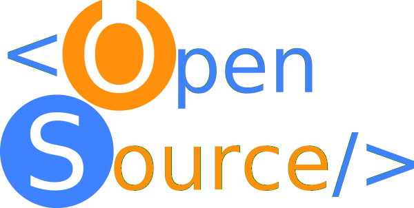

To promote, support, and create open source software.
The Open Source Club is a registered student
organization of the University of Florida. It is
open to students of all backgrounds and disciplines
who are interested in free and open source software.
We focus on developing software; however, no
coding experience is required.
In addition to building a community of open source
enthusiasts, the club’s objective is to create useful
projects that can benefit not only club members, but
also others in the University of Florida community,
all while developing the members teamworking and coding skills.
For more information, email us at
gator.osc@gmail.com
or check us out on:
Github,
Slack,
Facebook, and
Google+.